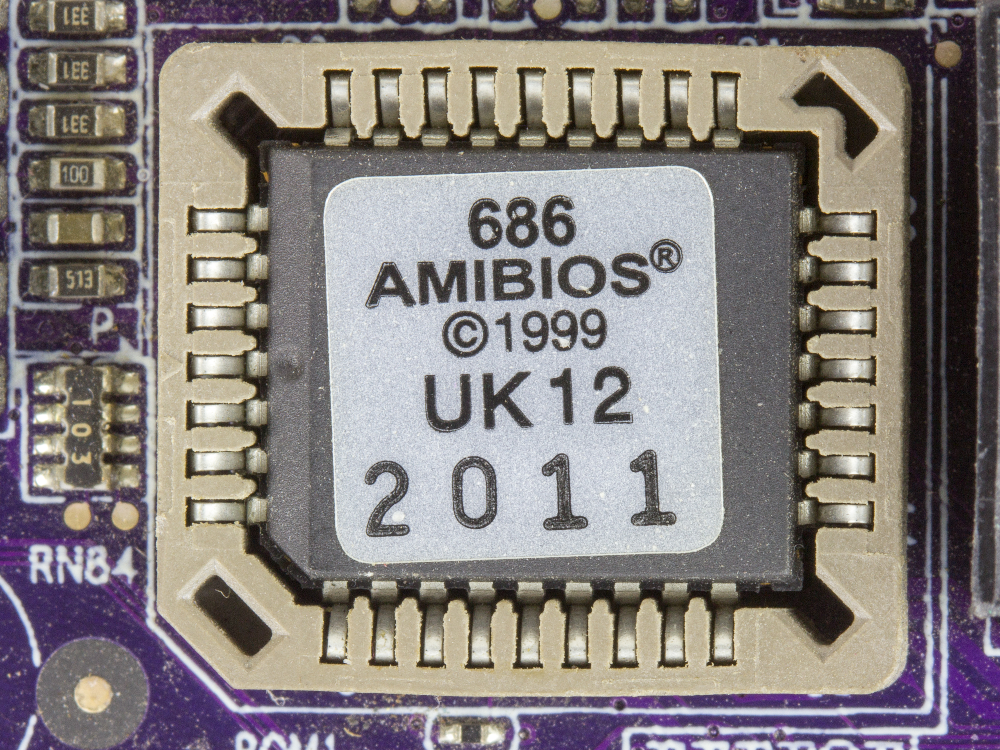
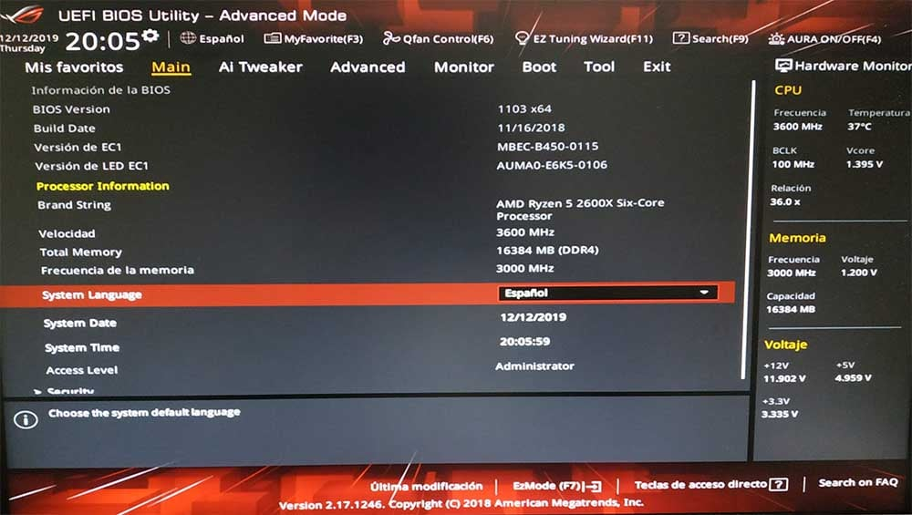
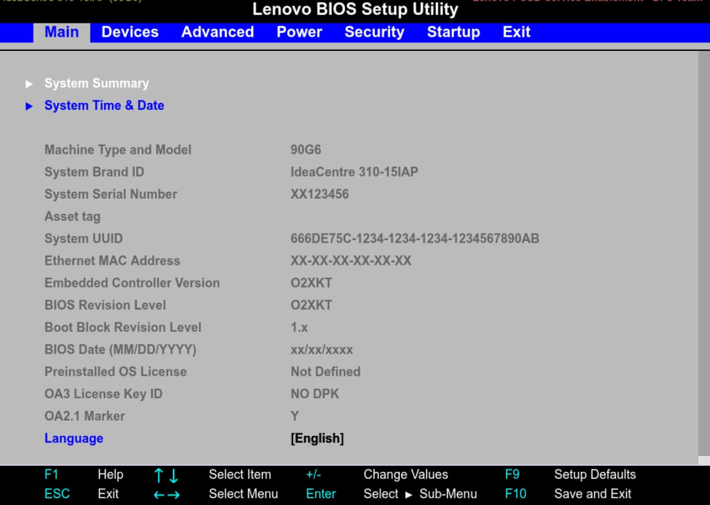

TEMA 10. MANTENIMIENTO DE EQUIPOS INFORMATICOS¶
Objetivos de aprendizaje¶
- Identificar los tipos de mantenimiento y su aplicacion en un aula o taller.
- Comprender la funcion del BIOS/UEFI y la CMOS en el arranque del sistema.
- Planificar tareas preventivas para alargar la vida util del hardware.
- Diagnosticar sintomas comunes y proponer acciones correctivas.
- Documentar el mantenimiento realizado con criterios profesionales.
1. Introduccion al mantenimiento de equipos¶
El mantenimiento de equipos informaticos es el conjunto de tareas tecnicas que garantizan que el hardware y el firmware funcionen de forma estable, segura y eficiente. Un buen plan de mantenimiento evita paradas inesperadas, reduce averias y mejora el rendimiento general del sistema. En el contexto educativo o profesional, mantener los equipos en condiciones optimas permite que el alumnado trabaje con fiabilidad, reduce incidencias en clase y facilita la vida del tecnico.
En esta unidad nos centraremos tanto en el mantenimiento fisico (limpieza, revisiones, sustituciones) como en el mantenimiento logico relacionado con el firmware (BIOS/UEFI) y la configuracion basica del hardware.
2. Tipos de mantenimiento¶
2.1 Mantenimiento preventivo¶
Consiste en actuaciones programadas para evitar fallos: limpieza interna, comprobacion de ventiladores, revision de cables y conectores, sustitucion de pasta termica o chequeo de la bateria CMOS. Su objetivo principal es reducir el desgaste y anticiparse a problemas futuros. La idea clave es sencilla: si revisas antes, fallas menos.
2.2 Mantenimiento predictivo¶
Se basa en observar indicadores para prever fallos: temperaturas anormalmente altas, ruidos en ventiladores, errores recurrentes en el arranque o reinicios imprevistos. Este tipo de mantenimiento se apoya en la monitorizacion y en la interpretacion de sintomas. Permite actuar antes de que un componente falle por completo.
2.3 Mantenimiento correctivo¶
Se realiza cuando el fallo ya ha ocurrido. Incluye diagnostico, reparacion y sustitucion de componentes. Es el mas costoso porque implica tiempos de parada y, a veces, perdida de datos. Por eso se combina con estrategias preventivas y predictivas para minimizar su impacto.
3. BIOS, UEFI y CMOS en el mantenimiento¶
El BIOS (Basic Input/Output System) es el firmware tradicional que inicia el hardware y prepara el sistema para cargar el sistema operativo. En equipos modernos, el BIOS ha sido reemplazado por UEFI, que ofrece mayor flexibilidad, interfaz grafica y soporte para discos grandes. Conocer estas diferencias es fundamental cuando se realiza mantenimiento o se actualiza un equipo, ya que la configuracion del arranque y la deteccion de dispositivos dependen de este firmware.
La memoria CMOS almacena los ajustes del BIOS/UEFI (fecha, hora, orden de arranque, configuraciones basicas). Se mantiene gracias a una bateria de boton; si esta se agota, el equipo puede perder la configuracion y mostrar errores al iniciar.
Anexo 6 (A6): Para ampliar sobre BIOS/UEFI, POST, pitidos y secuencia de arranque, consulta el anexo: A6.1 BIOS, UEFI y proceso de encendido.








4. Tareas de mantenimiento fisico¶
4.1 Limpieza interna y control termico¶
El polvo es uno de los grandes enemigos del hardware. Se acumula en disipadores y ventiladores, reduce el flujo de aire y aumenta la temperatura. En un mantenimiento preventivo se debe abrir la torre, limpiar con aire comprimido, revisar filtros y comprobar que los ventiladores giran correctamente. Un equipo con buena refrigeracion rinde mejor y su vida util se alarga.
4.2 Comprobacion de cables y conectores¶
Los conectores flojos o deteriorados pueden causar apagones, fallos de discos o errores de deteccion. Durante una revision se deben comprobar los cables de alimentacion, datos y los conectores internos. Es una tarea sencilla que evita problemas muy frecuentes.
4.3 Sustitucion de pasta termica¶
La pasta termica se degrada con el tiempo y pierde capacidad de transferencia de calor. Sustituirla de forma periodica en CPU o GPU reduce las temperaturas y previene el throttling. Esta tarea requiere cuidado, pero es parte esencial del mantenimiento preventivo.
5. Tareas de mantenimiento de firmware (BIOS/UEFI)¶
5.1 Actualizacion de BIOS/UEFI¶
Actualizar el BIOS/UEFI puede resolver problemas de compatibilidad, mejorar estabilidad y corregir errores. Sin embargo, debe hacerse con precaucion, siguiendo las instrucciones del fabricante y evitando cortes de corriente durante el proceso. Una actualizacion mal realizada puede dejar el equipo inservible. Por eso se recomienda solo cuando es necesario y siempre con respaldo de configuraciones.
5.2 Configuracion basica¶
El orden de arranque, la deteccion de discos o la fecha y hora son parametros esenciales. Si la bateria CMOS falla, estos ajustes se pierden y el equipo puede mostrar mensajes de error. En mantenimiento, revisar la bateria y sustituirla cuando sea necesario evita fallos de arranque.
6. Diagnostico de fallos frecuentes¶
Algunos sintomas comunes y su posible causa:
- No arranca y emite pitidos: fallo de RAM o GPU.
- Se reinicia de forma aleatoria: fuente de alimentacion inestable o sobrecalentamiento.
- Pierde fecha y hora: bateria CMOS agotada.
- Discos no detectados: cable SATA defectuoso o puerto fallando.
El tecnico debe relacionar sintoma y causa probable antes de sustituir piezas.
7. Buenas practicas de mantenimiento¶
- Documentar cada intervencion: fecha, tareas realizadas y piezas sustituidas.
- Trabajar con pulsera antiestatica para evitar descargas.
- No mezclar tornilleria y etiquetar piezas durante el desmontaje.
- Verificar con pruebas tras cada mantenimiento (arranque, temperaturas, ruido).
Ejemplos practicos¶
Caso 1: Equipo que no conserva la hora - Sintoma: la fecha se reinicia tras apagar. - Diagnostico: bateria CMOS agotada. - Solucion: sustituir bateria y configurar fecha/hora.
Caso 2: Apagones al exigir rendimiento - Sintoma: reinicio al abrir programas pesados. - Diagnostico: temperatura alta o fuente insuficiente. - Solucion: limpieza interna, revision de ventiladores y chequeo de PSU.
Caso 3: Disco no aparece en BIOS/UEFI - Sintoma: el sistema no detecta el SSD. - Diagnostico: cable suelto o puerto averiado. - Solucion: comprobar cableado y probar otro puerto.
Resumen (ideas clave)¶
- El mantenimiento preventivo reduce averias y costes.
- BIOS/UEFI y CMOS son claves para el arranque y la configuracion basica.
- La limpieza interna y el control termico son tareas esenciales.
- Actualizar firmware requiere precaucion y solo cuando sea necesario.
- Documentar las acciones mejora la gestion tecnica.
Referencias y enlaces¶
- https://es.wikibooks.org/wiki/Mantenimiento_y_Montaje_de_Equipos_Inform%C3%A1ticos/Tema_7/Texto_completo
- https://es.wikipedia.org/wiki/BIOS
- https://www.corsair.com/es/es/explorer/diy-builder/memory/what-are-cmos-bios-and-uefi/
- https://www.pccomponentes.com/bios-uefi-que-es
- https://www.profesionalreview.com/guias/bios/
- https://commons.wikimedia.org/wiki/File:Elitegroup_761GX-M754_-AMIBIOS(American_Megatrends)_in_a_Winbond_W39V040APZ-5491.jpg
- https://commons.wikimedia.org/wiki/File:Award_BIOS_setup_utility.png
Fecha de actualización: 01/02/2026